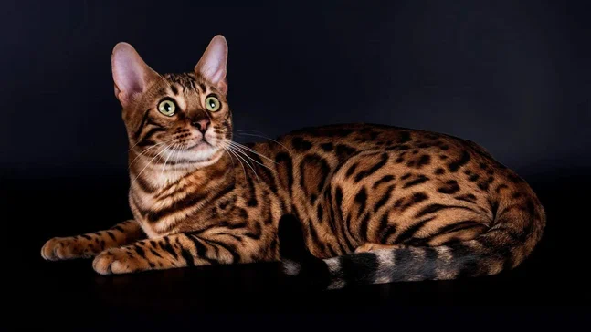
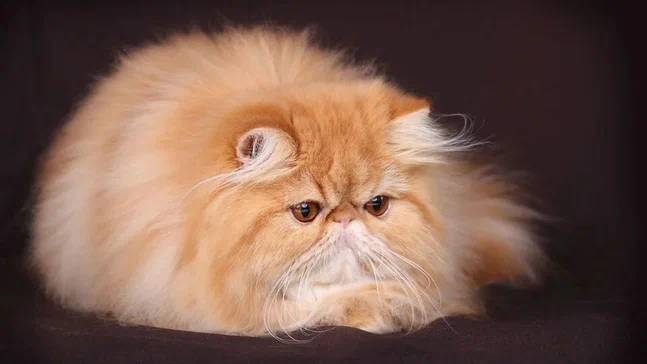
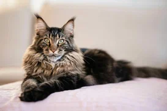
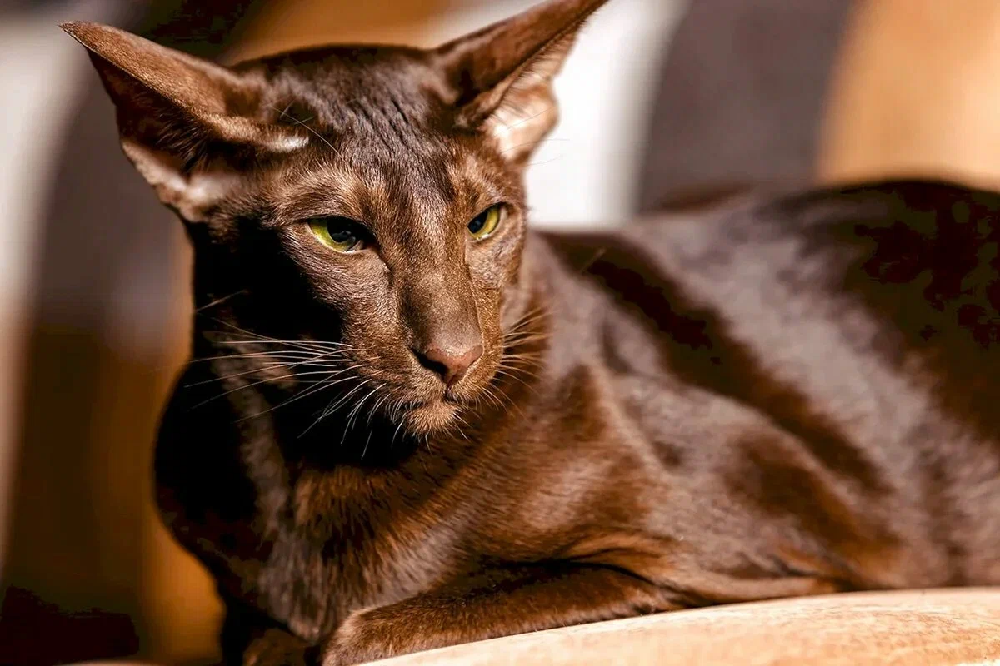

Кошка (лат. Felis catus) - домашнее животное, одно из наиболее популярных «животных-компаньонов». Принято считать, что домашняя кошка произошла от ливийского подвида лесной кошки, обитавшего в Средиземноморье, Передней, Центральной и Средней Азии.

Бенгальская кошка
Гибридная порода, результат скрещивания домашней и дикой леопардовой кошки. Выведена в США в 1961 году американским генетиком Джейн Милл.

Персидская кошка
Длинношёрстная порода кошек, известная длинной густой шерстью и характерной приплюснутой мордочкой.

Мейн-кун
Порода полудлинношёрстных кошек, аборигенная, появилась естественным образом в штате Мэн (США). Название происходит от названия штата Мэн и английского слова raccoon, что в переводе означает «енот».

Ориентальная кошка
Порода кошек, официально признанная в 1977 году в США. Принадлежит к сиамо-ориентальной породной группе.